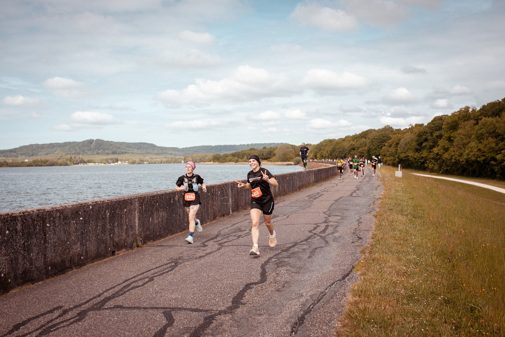
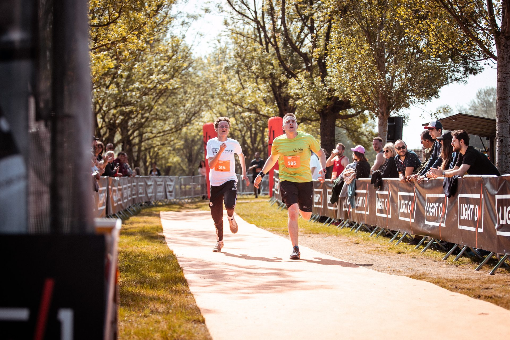
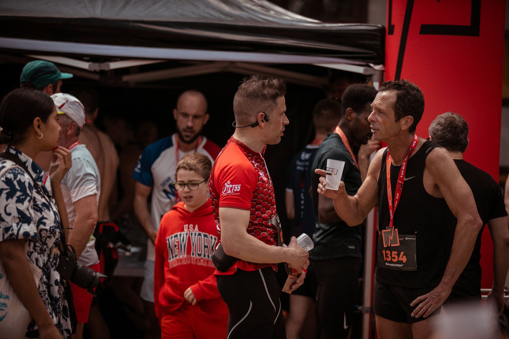
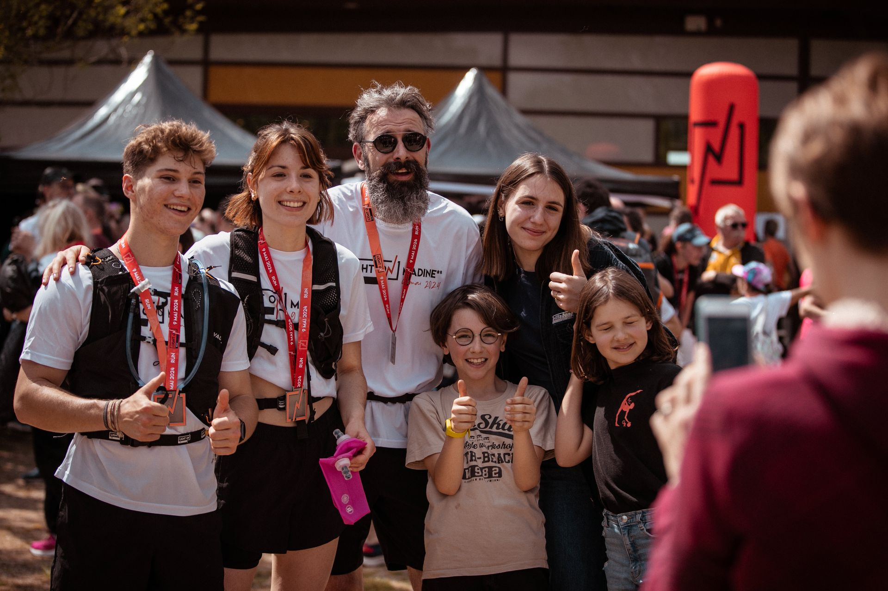
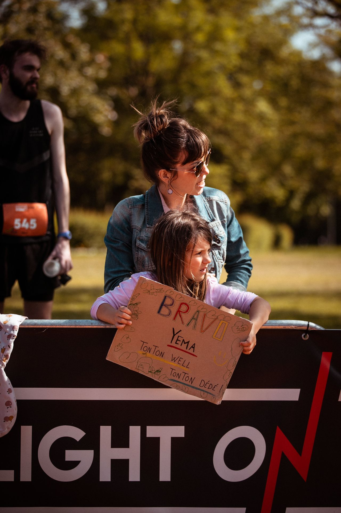
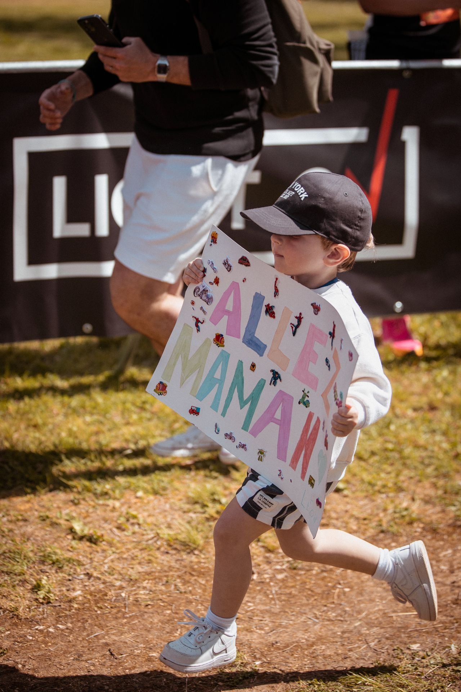

Programme & Village LIGHT ON Une journée au bord du lac.
Le mercredi pour prendre un peu d'avance, le jeudi pour courir, et le Village LIGHT ON au milieu de tout ça.
L'esprit LIGHT ON.
Du running sérieux, sans se prendre au sérieux. Voilà l'idée.
Il y a une distance pour vous
Premier dossard ou habitué des semis : 10 ou 21,1 km. Et tout le monde se retrouve au même ravitaillement d'arrivée.
Le lac, la forêt, le plat
Deux parcours à plat : le semi fait le tour complet du lac, le 10 km alterne rive et forêt. Pensez à lever la tête entre deux foulées.
Bon à savoir : le parcours n'est pas entièrement goudronné. Chemins et passages en forêt au programme.
Tout le monde fait la course
Coureurs, bénévoles, supporters au bord du chemin : chacun fait partie de l’aventure. Et plus on est nombreux, plus les sourires se multiplient. Ça, on adore ! « L'ambiance… et surtout la bienveillance des bénévoles. »Audrey L. Semi-Marathon**
Le plaisir avant le chrono
On vient pour les kilomètres et la ligne d’arrivée... Mais aussi pour l'ambiance du lac et la bonne humeur qui va avec. « Bonne ambiance générale, le parcours et le décor renforcent le plaisir. »Davy S. Semi-Marathon**
Carré, sans chichis
Balisage, ravitos, signaleurs, dossards : tout est prêt, et la bonne humeur est fournie. Vous n'avez plus qu'à courir. « Le système de retrait des dossards m'a paru particulièrement efficace. »Philippe S. Semi-Marathon**
La journée, heure par heure.
Le mercredi pour prendre de l'avance, le jeudi pour courir. Le Semi-Marathon** part en premier, le 10 KM* deux heures plus tard.

Tout se passe au Village LIGHT ON.
Départ, arrivée, ravitaillement final, stands et buvette : tout est au même endroit, au bord du Lac de Madine.




Stands & partenaires
Les partenaires installent leurs stands au Village LIGHT ON, du retrait des dossards jusqu'aux podiums.
Restauration sur place
Welcome Drink le jeudi pendant le retrait des dossards, puis buvette et ravitaillement à l'arrivée pour tous les coureurs, sur les deux courses.
LIGHT ON Shop
La boutique LIGHT ON s'installe au Village. De quoi repartir avec un souvenir de la course, en plus de la médaille.
Remise des récompenses
Le jeudi à 12h15, au Village LIGHT ON : podiums, applaudissements, et on se dit à l'année prochaine.
Le Lac de Madine.
Départ et arrivée à Nonsard-Lamarche (Meuse, 55210), au bord du Lac de Madine. Entre Verdun et Toul, en plein Parc naturel régional de Lorraine : c'est ce cadre qui donne le ton des parcours.
Le lac
Un plan d'eau au cœur du Parc naturel régional de Lorraine, en Meuse. Le semi en fait le tour complet, le 10 km alterne rive et forêt. Le tout à plat.
Le parc naturel régional
Forêts et étangs autour du lac : on court en plein cœur du parc. Pour le détail des deux tracés, direction les parcours du 10 KM* et du Semi-Marathon**.
Venir et dormir sur place
Le Lac de Madine se trouve en Meuse, entre Verdun et Toul. Accès, stationnement et hébergements autour du lac : tout est dans les infos pratiques.
Il ne manque plus que vous.
Inscriptions ouvertes. Rendez-vous le 6 mai 2027.